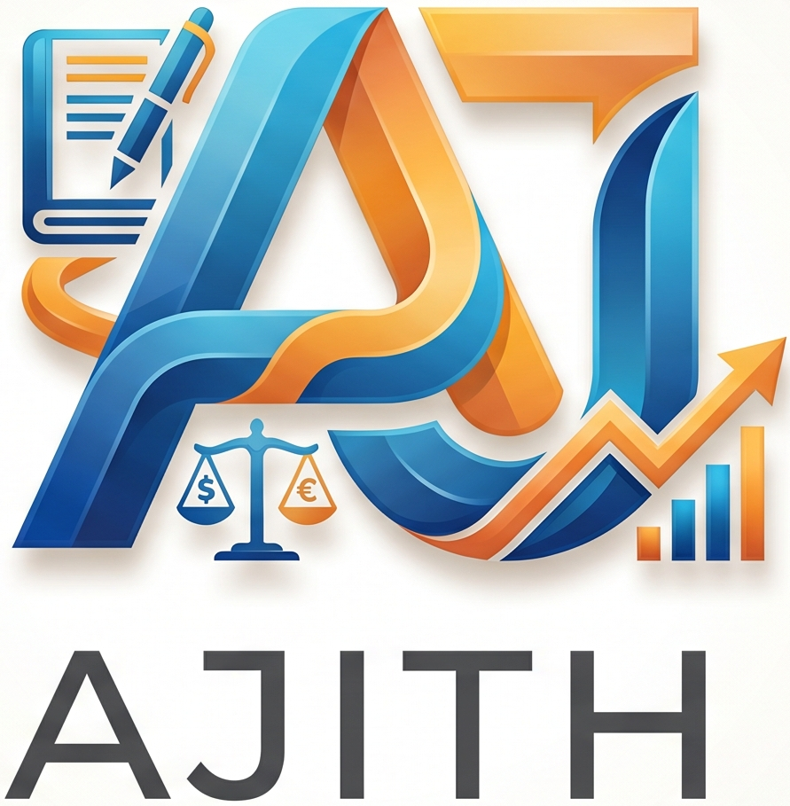

PDF workspace
Merge, split, organise, compress and extract text - all in your browser.
Choose PDF files
Drop files here, or use the visible picker below.
Password-protected PDFs are routed to the authorised unlocker.
Selected files
No PDFs selected.
Choose an action
Choose a PDF to begin.